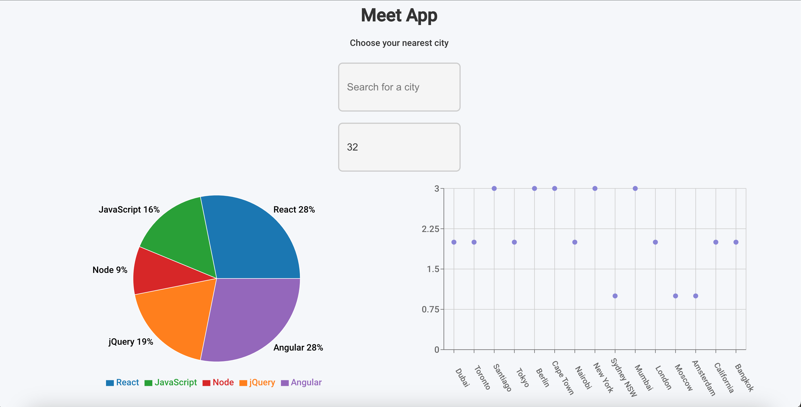

MyPortfolio
I am a Full-Stack Developer with a background in journalism and project management. To turn my passion for coding into a profession, I completed Career Foundry's Full-Stack Web Development program, where I gained expertise in JavaScript, React, NoSQL, and more.
I have worked as a writer, reporter, and photographer in activist and multimedia journalism for the past
15 years, with a diverse range of experiences in Damascus, Beirut, and Berlin. During this time, I have
extensively covered events in Syria since 2011 and reported on happenings in Iraq and Lebanon as well.
In addition to my journalistic work, I have also made notable contributions to various cultural events. One
of my significant accomplishments was my participation in "Another Place," an audio walk performance that
took place in multiple cities, including London, Berlin, Brussels, Beirut, and Santiago.
I am the author of the book titled "Table Ground," which was published by the Syrian Association for
Citizenship in 2014. Furthermore, I authored a guidebook on citizen journalism in conflict areas, which was
published by Friedrich Ebert Stiftung in 2016.
I received Samir Kassir Award for Freedom of the Press in 2013. Beyond my journalistic roles, I have also
taken on responsibilities as a project manager for various international organizations.
Currently, I am working as a sub-grant lead at SMEX.
I continue to contribute to various media platforms through my writing and reporting.
Meet App
Meet is an application that empowers users to discover events happening in various cities.
 View ProjectChat App
This React Native Chat Application allows users to engage in real-time conversations, share images, and even send their location.
Email: joud.hasan85@gmail.com
Tel: +49 17672116422